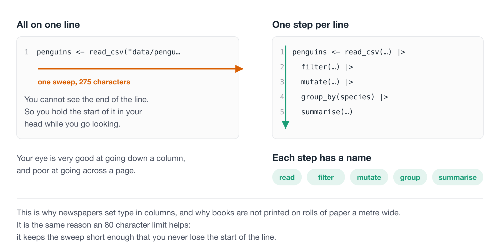
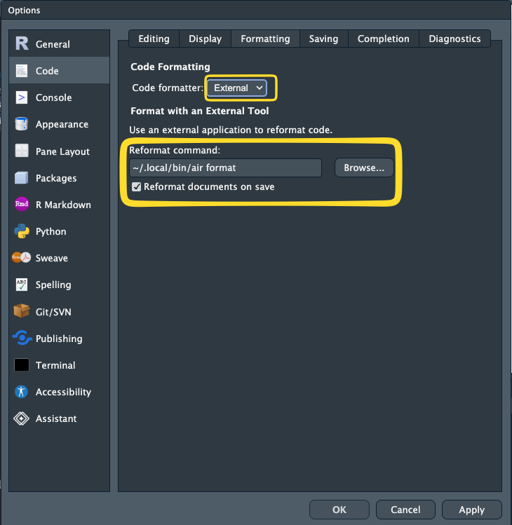
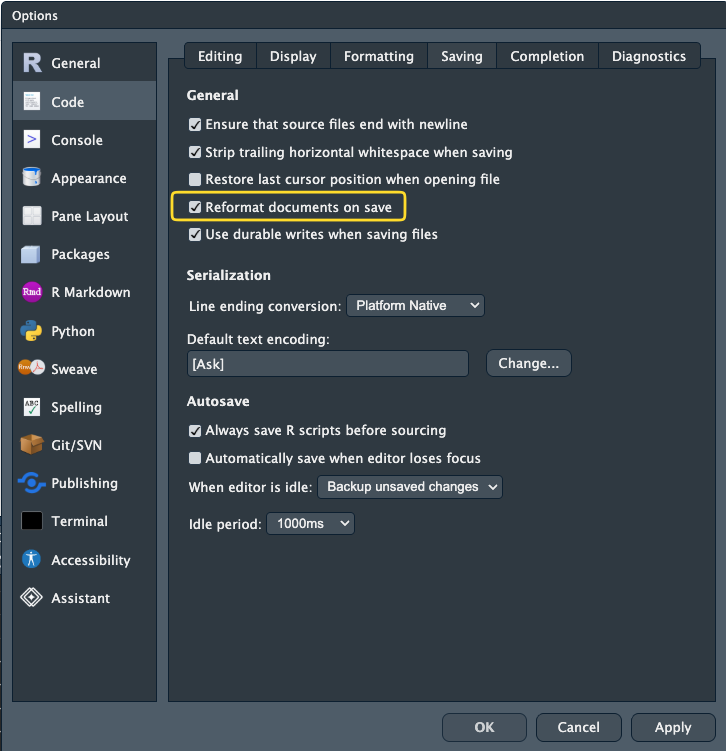
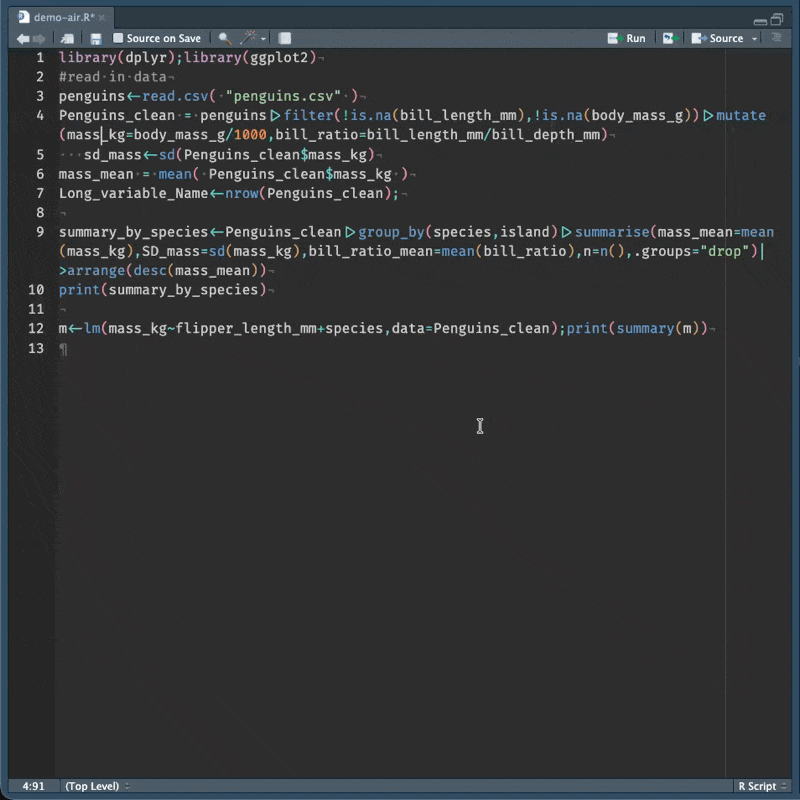
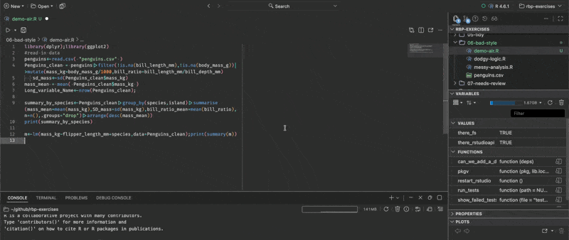
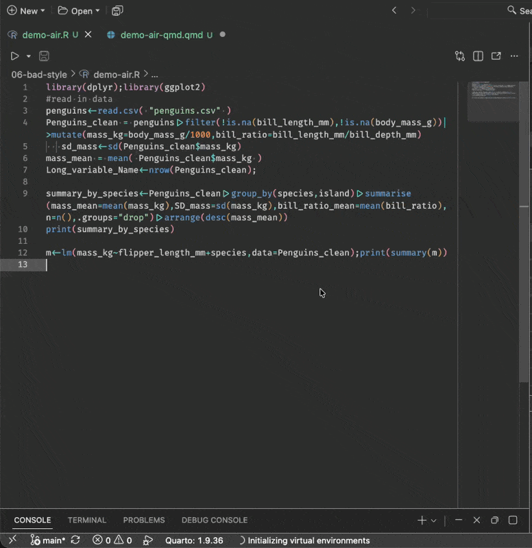

[1] FALSE2 Code style and readability
Good coding style is like correct punctuation: you can manage without it, butitsuremakesthingseasiertoread.
There is more to your code than having it run. We are aiming for your code to be “running” AND “easy to read, and easy to understand”.
There are some really useful tools we can apply to get quick wins on improving the readability of your code. In this section we will discuss concepts of code style, talking about how to easily improve code layout (whitespace, newlines, punctuation standards), and improving code with code linting - where a program looks at how your code is written and identifies common errors, style inconsistencies, and other known problem patterns.
Overview
Duration 45 minutes
Questions
- Why does style matter, if the code runs either way?
- What counts as style: layout, naming, or correctness?
- How should I lay out a pipeline, and what should I call things?
- What is a code formatter, and how do I get one to run on save?
- What is a linter, and what does it catch that a formatter does not?
2.1 Reading things that are hard to read is hard
Which of these is easier to read?
i dont understan an ingle werd sumtimes of wot i say, but it is becoz i am so cleva
– Oscar Wilde, The Happy Prince and Other Stories
I am so clever that sometimes I don’t understand a single word of what I am saying
– Oscar Wilde, The Happy Prince and Other Stories
One of these is harder to read than the other. It is easier to read the text that has correct spelling and grammar.
Punctuation is an example of grammar - it plays a role in deciding what the words mean.
Here is Lionel Hutz, from The Simpsons, attorney at law.
The punctuation changed the meaning!
You can still work out what it says. But you spend energy doing it. Our precious mental energy.
We want our code to be easier to understand, when we’re reading a big lump of text:
we ran the model on the new data and it’s results where different to what we expected. the team thought maybe the cleaning script had changed But after checking, changed it had not. Their was one column read in as character not a number, which meant the mean was computed over text and returned NA this is the kind of thing thats easy to miss when your reading quickly
We ran the model on the new data, and its results were different to what we expected. The team thought maybe the cleaning script had changed, but after checking, it had not. There was one column read in as a character rather than a number, which meant the mean was computed over text and returned
NA. This is the kind of thing that is easy to miss when you are reading quickly.
Both say the same thing. The second one you read once.
Going through the first, you were doing unpaid work the whole way - and these little bumps interrupt your thinking:
- Silently correcting “their” to “there”.
- Has a sentence ended? There was a capital letter.
- Re-reading the sentence, it sounds backwards.
Our energy and our attention are finite resources, and if we spend them on these smaller things, then we will spend less energy on the goal: understanding the meaning.
2.1.1 CPU cycles vs mental cycles
A computer has CPU cycles, and we spend real effort saving them - avoiding a copy of a big object, shaving milliseconds off something that runs a thousand times.
You have mental cycles too, and yours are far more expensive.
So: terse code saves the machine a tenth of a second, and then you spend an extra minute reading it every time you come back. Nothing got faster. The work moved off the machine, which has cycles to spare, and onto you, who does not.
Spend the computer’s freely. Guard your own.
Code is the same, and R has its own version of the Hutz card:
The first line assigns 1 to x. The second asks whether x is less than negative one. One space, and a completely different meaning.
R accepted both without complaint, which is the whole problem.
Both of these take the chicks at day 21, and ask which diets came out above the average weight.
# A tibble: 4 × 4
Diet m n f
<fct> <dbl> <int> <lgl>
1 3 270. 10 TRUE
2 4 239. 9 TRUE
3 2 215. 10 TRUE
4 1 178. 16 TRUE library(tidyverse)
overall_mean <- mean(ChickWeight$weight)
chicks_day_21 <- ChickWeight |>
filter(Time == 21)
diet_summary <- chicks_day_21 |>
group_by(Diet) |>
summarise(
weight_mean = mean(weight),
n_chicks = n()
) |>
arrange(desc(weight_mean)) |>
mutate(above_overall_mean = weight_mean > overall_mean)
diet_summary# A tibble: 4 × 4
Diet weight_mean n_chicks above_overall_mean
<fct> <dbl> <int> <lgl>
1 3 270. 10 TRUE
2 4 239. 9 TRUE
3 2 215. 10 TRUE
4 1 178. 16 TRUE These both run. R does not care where you put your spaces. R does not care that your variables are short, that your code is very long-winded. Or short-winded.
But you care about these things - every stray space, and every inconsistent name is one more small correction you make before you can get at what the code is trying to do.
You are spending your mental cycles on this problem. It would be nice if you didn’t have to do that.
2.1.2 Both of those are wrong
Let’s look closely at that last column. Every diet is above the overall mean. Weird? This happens because the overall mean is taken from ChickWeight before the filter. It is the average weight across every day of the study - day 0 chicks included, when they weighed about 40 grams. Every day 21 chick clears that easily.
[1] 121.8183[1] 218.6889Both versions have the bug. Good layout doesn’t fix the bug, but it makes it (in my opinion!) easier to notice. M and m tell you nothing, so there is nothing to be suspicious about. overall_mean and weight_mean sitting on the same line, makes us ask: the overall mean of what?
The style helps buy back some of your attention.
And that is part of what this lesson is about - there are ways to automate a lot of this! And there are ways to turn the rest into a habit, so it stops being a decision you make every time you write a line.
Nearly all of that surface level noise is systematic, which means we can get rid of it systematically.
And once it’s gone, your attention goes to the part that actually needs you: whether the code does the right thing.
2.2 Style is like grammar
Style guides define a set of rules that keep code easy to read. To quote Hadley Wickham:
Good coding style is like correct punctuation: you can manage without it, butitsuremakesthingseasiertoread.
2.2.1 Style: layout, naming, correctness
It helps to split “style” into two parts, because they need very different things from you.
Layout. Where the spaces go, where the line breaks go, how deep the indentation is, how a long function call gets split across lines.
This part is completely mechanical, and a tool can do all of it.
Naming. What you call your variables, your functions, and your files.
This one is yours, because a name is a decision about meaning.
There is a third thing that is not style at all, but often gets lumped in with it.
Correctness. Whether your code actually does what you think it does.
This one is worth doing slowly, with two examples, because the failures are quiet.
Comparing two numbers. You would think this is safe:
No! Those numbers are stored as binary approximations and the answer is a hair off:
So you reach for all.equal(), which allows a small tolerance:
Good. Now watch what it does when the two things are genuinely different:
It does not return FALSE. It returns a sentence. And if() cannot do anything with a sentence:
Error in `if (all.equal(1, 2)) ...`:
! argument is not interpretable as logicalThe fix is isTRUE(), which asks the narrower question “is this exactly TRUE”:
What that means in an analysis. While the two values agree, all.equal() returns TRUE, your if works, and you never learn there is a problem. It only breaks on the day the values differ - which is precisely the day you wrote the check for.
Recoding a factor. Here is one that does not error at all:
You asked for "low" and got "2". A factor is stored as integers with labels attached:
ifelse() drops the labels and hands back the bare codes. So "low" became "2", its position in the alphabetical list of levels.
What that means in an analysis. Nothing warns you. You now have a column where a category has been replaced by its alphabetical rank, and every join, plot and table built on it downstream is quietly wrong. Add a new level next year and the numbers all shift.
dplyr::if_else() is stricter about types and keeps the factor:
Both of those problems are laid out perfectly well. Every space is in the right place. A formatter has nothing to say about either of them, and neither does a careful read, most days. That is a linter’s job, and we come back to it later in this chapter.
So.
- Layout is automatable
- Naming is yours
- Correctness is a different tool
![Three rows, each with an example and the thing that fixes it. Layout - spaces, line breaks: mean(x,na.rm=TRUE) becomes mean(x, na.rm = TRUE), and a formatter fixes it on save. Naming - variables, files: d2 becomes chicks_day_21, and the row is outlined in orange with a dashed badge reading you, by hand, this one is yours. Correctness, whether the code does what you think it does: if (all.equal(x, y)) becomes if (isTRUE(all.equal(x, y))), and a linter flags it for you. The middle row is the one that needs a person.](figs/style-three-jobs.png)
Let’s get into it.
2.3 Layout
Lines are free. Use them.
NoteYour Turn: a quick check on pipes
Everything from here on uses the pipe, |>, so let’s make sure we are all in the same place before we start.
- Have you used
|>, or%>%, before? - Could you say out loud what this does?
I like to read the pipe as then:
Take the penguins data, then filter it to the rows where species is “Adelie”.
The pipe gets a proper treatment in Workflow: code style in R for Data Science. It’s a great book!
Let’s look at the same code twice.
All three give the same answer. R sees no difference at all.
But in the second one you can see the shape of the analysis:
- filter()
- group_by()
- summarise()
Three steps, one per line, each indented to show it belongs to the pipeline.
In the first one you have to parse it yourself, character by character, before you can even start thinking about whether the analysis is right.
The third one is the interesting case, because it is the one that looks fine. Every space is in the right place, the indentation is correct, and a formatter would leave it exactly as it is.
It is still harder to read, because the steps now run inside out. filter() happens first and sits deepest. summarise() happens last and sits at the top. To read it you have to find the innermost bracket, then work your way out, holding each layer in your head as you go. To read the pipe version you start at the top and go down.
That is a different problem from layout, and no formatter will fix it for you. It is also where rainbow parentheses start earning their keep - once you are three or four brackets deep, matching them by eye becomes its own small job, on top of the actual work.
NoteYour Turn
2.3.1 The one line special
I once saw someone writing code where the goal, as far as I could tell, was to have as few lines as possible.
Not fewer steps. Fewer lines.
It was an entire analysis. Read the data in, reshape it, fit a model, draw a plot, save it. Four lines.
Have a look at both of these, and see which one you would rather open on a Monday morning.
penguins <- read_csv("data/penguins.csv") |> filter(!is.na(bill_length_mm), !is.na(body_mass_g)) |> mutate(mass_kg = body_mass_g / 1000, bill_ratio = bill_length_mm / bill_depth_mm) |> group_by(species) |> mutate(mass_z = (mass_kg - mean(mass_kg)) / sd(mass_kg)) |> ungroup()
fit <- lm(mass_kg ~ bill_ratio + species + island, data = penguins)
p <- ggplot(penguins, aes(x = bill_ratio, y = mass_kg, colour = species)) + geom_point(alpha = 0.6) + geom_smooth(method = "lm", se = FALSE) + facet_wrap(~island) + labs(x = "Bill length / bill depth", y = "Body mass (kg)") + theme_minimal(base_size = 12)
ggsave("output/figures/mass-bill-ratio.png", p, width = 8, height = 5, dpi = 300)penguins <- read_csv("data/penguins.csv") |>
filter(
!is.na(bill_length_mm),
!is.na(body_mass_g)
) |>
mutate(
mass_kg = body_mass_g / 1000,
bill_ratio = bill_length_mm / bill_depth_mm
) |>
group_by(species) |>
mutate(mass_z = (mass_kg - mean(mass_kg)) / sd(mass_kg)) |>
ungroup()
fit <- lm(mass_kg ~ bill_ratio + species + island, data = penguins)
p <- ggplot(penguins, aes(x = bill_ratio, y = mass_kg, colour = species)) +
geom_point(alpha = 0.6) +
geom_smooth(method = "lm", se = FALSE) +
facet_wrap(~island) +
labs(
x = "Bill length / bill depth",
y = "Body mass (kg)"
) +
theme_minimal(base_size = 12)
ggsave(
"output/figures/mass-bill-ratio.png",
p,
width = 8,
height = 5,
dpi = 300
)
Same code. Same results.
But look at what your eye can do with the second one. You can run down the left hand edge and read the steps off like a list: filter, mutate, group by, mutate, ungroup.
Your eye is very good at scanning down a column. It is terrible at scanning across a page, which is why newspapers use columns and why books are not printed on rolls of paper a metre wide.
The first version makes you do the horizontal thing. On a laptop you cannot even see the end of those lines without scrolling sideways, so you are holding the start of the line in your head while you go looking for the end of it.
Those are mental cycles, and you are burning them on the shape of the code rather than on the analysis.
There is a second thing that shows up the moment something breaks. R tells you which line the error is on. In the first version that is not much help, because a quarter of your analysis is on that line.
Lines are free. Use them.
2.4 Naming
This is the half of style that a formatter cannot help you with.
Pick a convention, snake_case, camelCase, or CamelCase, and stick to it. I prefer snake_case because I find it easier to read, but the choice matters far less than the consistency.
Consistency matters for a reason more concrete than tidiness. Compare:
with:
The first pair changes the order of the naming. The second sticks to one pattern, variable_operation, where the first word says what we measured and the second says what we did to it.
Why does that help? Tab complete.
If I am consistent, I can type weight_ and press tab, and R tells me every single thing I have done to weight.
If I had chosen the other order, sd_ would tell me everything I have taken a standard deviation of:
Either order is fine. What you can’t do is mix them.
Because then you have to remember which way round you named each thing, and that’s exactly the kind of small tax that makes code tiring to work with.
2.5 Read a style guide, once
It’s worth your time to read through a style guide once. Properly, start to finish, one time.
You’ll notice things in your own code that you didn’t see before, and you’ll see other people’s code differently. It’s a bit like learning about kerning.
Once you see it, you notice it everywhere.
NoteYour Turn
Read the style chapter of Advanced R, 1st edition. It is short, and you can get through it in about ten minutes.
As you read, keep a list of the rules you are currently breaking. Don’t fix anything yet.
TipGoing deeper
When you have more time, read sections 1 to 5 of the Tidyverse style guide: files, syntax, functions, pipes, and ggplot2.
It is the more complete treatment, and it explains the reasoning behind each rule rather than just stating it.
The files chapter is worth reading alongside the project organisation lesson, because it is really about project structure rather than code.
2.6 Do I have to do all this by hand?
No. And you shouldn’t.
If you try to apply a style guide by hand you will spend your time putting spaces after commas, lining up arguments, and re-indenting things you just moved. It is tedious, and you will do it inconsistently, because it is exactly the kind of task humans are bad at and get bored by.
Worse, you’ll do it instead of the analysis.
The good news is that layout is mechanical, and mechanical things can be automated.
2.7 Using the {air} formatter
Air is an R formatter from Posit. You point it at your code, and it lays it out properly. It is basically magic.
Once you have it wired into your editor, you stop thinking about layout. You type whatever comes out of your head, hit save, and it comes out tidy. You don’t need to spend another moment going over your code tweaking spaces.
2.7.1 Checking air is installed
You installed air in the setup chapter - Code formatters. We just need to check it is there, and find out where it lives.
NoteYour Turn: check air is installed
- Open a terminal. In RStudio that’s the Terminal tab, next to the Console.
- Run
air --versionand check you get a number back. - Run
which airon macOS or Linux, orwhere airon Windows, and write the path down. You need it in a minute.
If you get “command not found”, the install didn’t finish - go back to Code formatters and run it again.
If it won’t install, don’t spend the whole session fighting it. Use {styler} for today, and come back to air later.
2.7.2 If you can’t install air, use {styler}
If you can’t install {air} because of network issues, use {styler}. This is an R package that pre dates {air}. Install it with:
It follows the same tidyverse style guide air does, so the output is very close.
There are a few differences between air and styler, basically: air is faster, and it is less configurable.
2.8 Format on save (aka magic)
This changes how you work!
Once this is set up, you write code however it falls out of your head. Wonky spacing, arguments strewn across the line, indentation all over the place. Do not fix any of it.
Hit Cmd / Ctrl + S, and it is all just correct.
I cannot really oversell this.
You need RStudio 2024.12.0 or later.
You want the path you wrote down a moment ago, from which air or where air.
Go: Tools → Global Options → Code → Formatting.
For {air} Set Code formatter to External.
For {styler} Set Code formatter to Styler.
Set Reformat command to your air path followed by format, so something like /Users/nick/.local/bin/air format. If your path has spaces in it, wrap it in double quotes.

Now turn on format on save. Go: Tools → Global Options → Code → Saving, and tick Reformat documents on save.


Air comes with Positron, so there is nothing to install.
Open the command palette (Cmd/Ctrl + Shift + P) and run Air: Initialize Workspace Folder. This writes the recommended settings into your project.

If you’d rather do it by hand, add this to your settings.json:
For R chunks inside Quarto documents, add the Quarto formatter too:

TipSetting it up from R
NoteYour Turn: the good bit
- Set up format on save in your editor, using the tabs above.
- Open any R script. Make a mess of it on purpose. Delete the spaces around a
<-, jam some arguments together, break the indentation. - Hit
Cmd / Ctrl + S. - Do that three or four more times, with a different kind of mess each time,
I want you to do it repeatedly, because you don’t have to tidy your own code, and that’s awesome.
2.8.1 Formatting a file, or a whole project
You don’t need format on save, or even an editor. Both tools will format one file, or everything at once.
Air will format a single file:
or an entire project:
That second one is the command I run most. It is also the one worth putting in front of any code review, so that nobody spends their attention on spacing.
NoteYour Turn
There is a deliberately awful script in the course repository at 06-bad-style/messy-analysis.R. It breaks essentially every rule in this chapter.
- Open
messy-analysis.Rand read it. Note how long it takes you to work out what it does. - Format it with air or styler.
- Read it again. What can you see now that you couldn’t before?
- Look at the variable names in the formatted version. Air has not touched a single one of them, and they’re still a mess. Write down three you would rename.
NoteNotes on using air
A few things that will save you some confusion.
There is very little to configure, and that’s on purpose. Air’s settings live in an air.toml file, and there are about ten of them. The ones you might actually change are line-width (default 80) and indent-width (default 2). There is no way to spend an afternoon tuning it, which is exactly why I like it.
It won’t work on an untitled tab. Air needs a file that exists on disk, with an .R extension, so that it knows it’s looking at R code. Save the file first.
In RStudio it won’t work inside R chunks in Quarto or R Markdown. This is an RStudio limitation rather than an air one, and it may well change. Positron handles chunks fine.
If your code doesn’t reformat, you probably have a syntax error. Air will not format code it cannot parse. So a file that stubbornly refuses to tidy up is telling you something useful. Go and find your missing bracket.
That last one turns out to be a small free bonus. Format on save quietly becomes a syntax check on save.
2.9 Using linters
Air has now taken care of how your code looks. Here is a piece of code where that isn’t the problem.
Air is perfectly happy with that. Every space is in the right place, the indentation is correct, and running air format on it changes nothing at all.
It is also broken.
When sites is empty, length(sites) is 0, and 1:0 does not give you nothing. It gives you this:
So the loop runs twice, on elements 1 and 0, neither of which exists. No error, no warning, and a message about a site that isn’t there.
This is a different kind of problem, and it needs a different kind of tool.
- A formatter changes how your code looks.
{air}doesn’t care what your code does. - A linter tells you what your code might be doing wrong. It reads your code without running it, which is called static analysis, and flags errors, bugs, and suspicious patterns.
You want both. Formatting settles arguments about layout. Linting catches the class of mistake that runs perfectly happily and gives you the wrong answer.
CautionSome history: why is it called a linter?
The name comes from a program called lint, written by Stephen C. Johnson at Bell Labs in 1978 to check C code for bugs and portability problems. You can read more on the Wikipedia page for lint.
Lint is the fluff that clothes shed in the wash, and a clothes dryer has a lint trap to catch it. Johnson’s idea was that his program would work the same way, catching the waste fibres while leaving the fabric intact.
Your code is the fabric. The linter is the trap.
I like this because it sets the right expectation. A lint trap does not tell you the jumper was a bad idea. It picks off the fluff, and it does it every single load, without being asked.
2.9.1 jarl
Jarl, which stands for Just Another R Linter, is a fast linter by Etienne Bacher. It is built on top of Air, which is why the two feel like the same tool.
Here is a script of the kind most of us have written. Nothing exotic. Read some data in, flag a few things, print a message.
Air has no complaints. It runs without an error.
Point a linter at it, though, and you get three warnings. Use whichever of these you have:
warning: equals_na
--> penguin-check.R:3:17
|
3 | missing_mass <- penguins$body_mass_g == NA
| -------------------------- Comparing to NA with `==`, `!=` or `%in%` is problematic.
|
= help: Use `is.na()` instead.
warning: true_false_symbol
--> penguin-check.R:5:55
|
5 | penguins$heavy <- ifelse(penguins$body_mass_g > 5000, T, F)
| - `T` and `F` can be confused with variable names.
|
warning: redundant_equals
--> penguin-check.R:9:5
|
9 | if (has_data == TRUE) {
| ---------------- Using == on a logical vector is redundant.
|Let’s take those one at a time, because each one teaches something.
missing_mass <- penguins$body_mass_g == NA
This is the one I want you to remember. It looks completely reasonable, and it is always wrong.
NA means “I don’t know”. So asking “is this value equal to a value I don’t know?” can only be answered with “I don’t know”:
Every answer is NA, including for the values that are obviously not missing. Your missing_mass vector contains no information at all! Note that jarl even told you want to do!
That’s the function you wanted.
ifelse(..., T, F)
TRUE and FALSE are reserved words in R. T and F are just ordinary variables that happen to start out holding TRUE and FALSE, which means anyone can reassign them.
na.rm = T quietly became na.rm = FALSE, and the mean is now NA. Spell them out and this cannot happen to you.
if (has_data == TRUE)
has_data is already TRUE or FALSE. Comparing it to TRUE gets you back exactly what you started with, so if (has_data) says the same thing with less to read.
This one is not a bug. It is a mental cycle.
ImportantTwo nastier ones, for later
These are much harder to spot by eye.
class(dat) == "data.frame" looks fine until you meet an object with more than one class:
[1] "data.frame"[1] "nfnGroupedData" "nfGroupedData" "groupedData" "data.frame" One class for a plain data frame, four for that one. So the comparison hands if() four answers where it wanted one, and errors. inherits(dat, "data.frame") asks the question you actually meant.
if (all.equal(x, y)) is worse. all.equal() returns TRUE when things match, and a description of the difference when they don’t:
if() can’t do anything sensible with it. So the code works perfectly while your values match, and falls over the first time they don’t, which is precisely the case you wrote the check for. isTRUE(all.equal(x, y)) fixes it. (demo).
Notice that these fail in two different ways.
== NA and na.rm = T are silent. They run, there is no error and no warning, and the answer is wrong.
That is what a linter is for. Careful reading could catch all of these. But a tool catches them every time.
Where a fix is clear and safe, jarl or flir can apply it for you:
which turns the T and F into TRUE and FALSE. It won’t touch the == NA, because deciding what you actually meant there is your job, not the tool’s.
It ships 55+ rules, integrates with VS Code, Positron and Zed, and runs in CI. It’s also very fast. On the dplyr source, roughly 25,000 lines of R, the documented benchmark is 0.131 seconds against 18.5 seconds for {lintr}.
TipWhat about lintr?
{lintr} is the long established R linter, it’s pure R, and it’s what you’ll meet in most existing projects and CI setups. It’s a perfectly good tool and knowing it is worthwhile.
Jarl is newer and much faster, which matters more than it sounds.
A linter you run on every save changes your habits.
Use something! Either one of them.
2.9.2 If you can’t install jarl, use {flir}
Same story as air. Jarl is a command line tool, so the install can go wrong in all the same ways.
Your backup is {flir}, which is an ordinary R package:
It’s by Etienne as well, and it’s fast for the same sorts of reasons. The documented benchmark is 172 milliseconds against 3.44 seconds for {lintr} on the same code.
Two functions do the work:
lint() tells you what it found. fix() applies the changes it’s confident about, the same way jarl check --fix does.
Call them with flir:: in front, as above. If you run library(flir) instead, its fix() will mask the fix() that comes with R, and you’ll get a warning.
One thing you should know. Etienne has moved on to jarl, and says on the flir site that he won’t be adding new rules to it. So flir is finished rather than growing.
For our purposes that’s fine. It catches everything in this chapter, it installs anywhere R installs, and it fixes what it can.
NoteYour Turn
Back to 06-bad-style/. There’s a second file there, dodgy-logic.R, which is formatted perfectly well and still wrong.
- Read it, and see if you can spot the bug by eye. Give yourself two minutes.
- Run
jarl check 06-bad-style/dodgy-logic.R. If you don’t have jarl, useflir::lint("06-bad-style/dodgy-logic.R")orlintr::lint("06-bad-style/dodgy-logic.R"). - Now run
jarl checkover your own most recent project. What comes up?
Nothing on that last one is a judgement. I run this over my own code and it finds things every time.
TipRead more
The style and naming material in this chapter is adapted from my blog post How to get good with R.
Summary
- Badly laid out code makes you spend mental cycles on the surface before you get to the ideas, in the same way that bad spelling does.
- Mental cycles are worth more than computer cycles. Spend the machine’s, guard your own.
- Lines are free. Use them, because your eye reads down far better than across.
- Pick a naming convention and stick to it, because consistency is what makes tab complete work for you.
- Read a style guide once, properly, and you’ll see code differently afterwards.
- Set up
{air}and format on save, then stop thinking about layout. - A linter is a different tool again, and it catches the bugs that run perfectly happily.
Next, we look at readability beyond layout: names that carry meaning, breaking a wall of code into pieces, and how to review code.